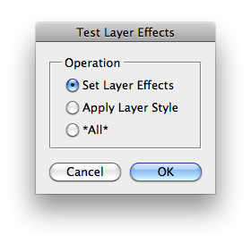

This script is part of the set of Test Scripts coming with the JSON Action Manager scripting library.
It shows how to create layer effects, by setting individual parameters or applying a layer style by name:
Back to JSON Action Manager Test Scripts